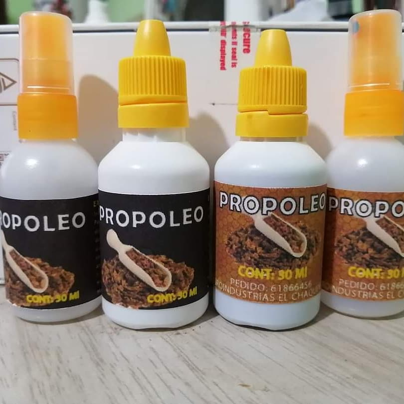
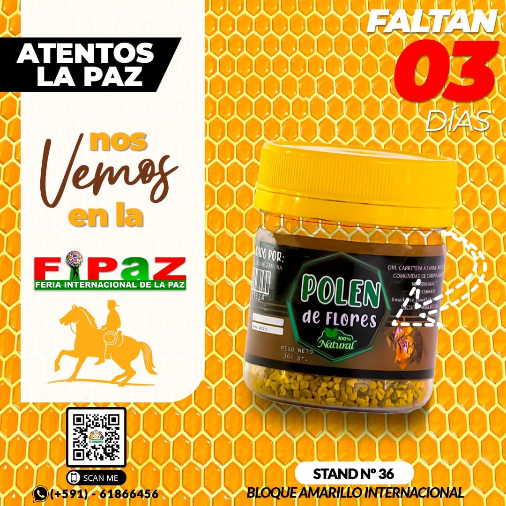

Miel Pura
100% natural y de la mejor calidad.

Agroindustrias El Chaqueñito es una tienda especializada en la venta de insumos y productos derivados de la miel, ubicada en Cochabamba, Bolivia. Ofrecemos una amplia variedad de insumos apícolas y productos de alta calidad para apicultores y amantes de la miel.
100% natural y de la mejor calidad.
Un excelente antibiótico natural.
Fuente de energía y vitalidad.
Sabor que te endulza
Somos una empresa comprometida con la producción y comercialización de productos apícolas de alta calidad.
Correo: jose_cana85@hotmail.com